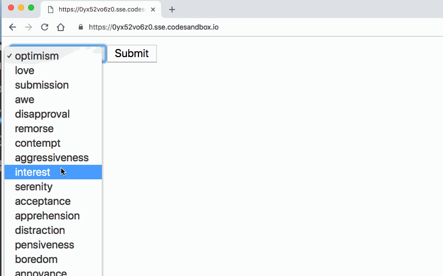
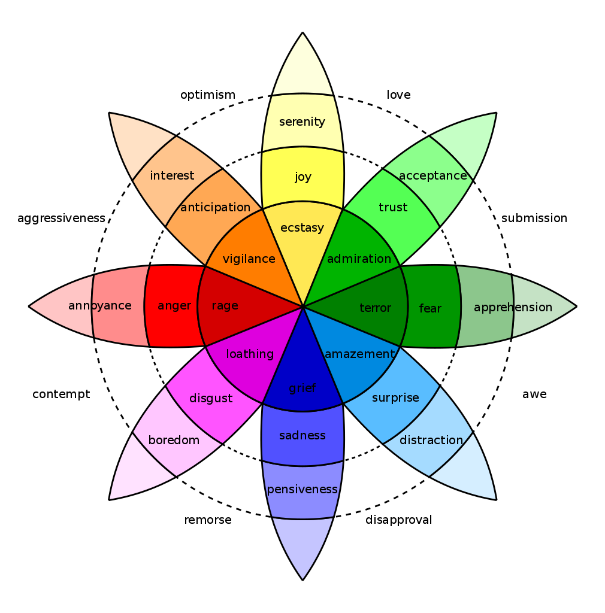
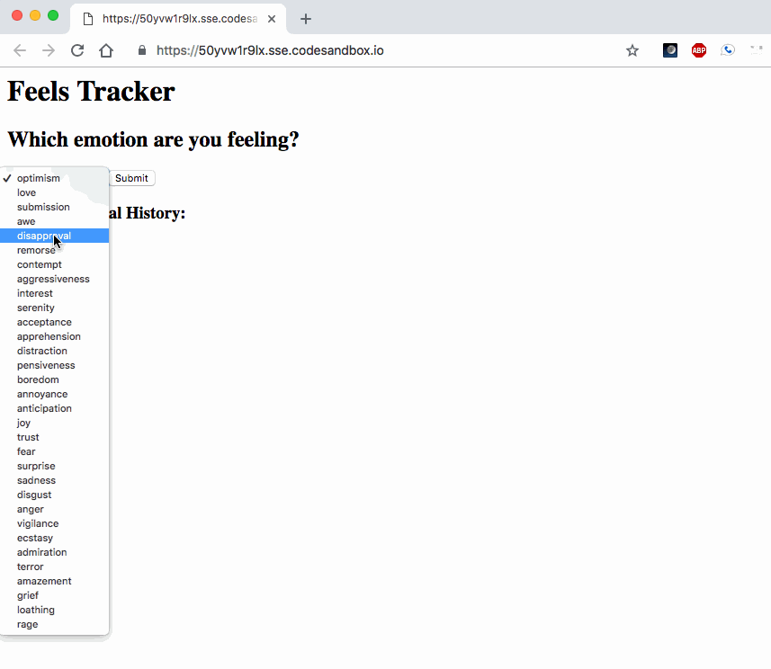

Project Journal: January 8, 2019
I had another solid day, which is pretty fantastic.
Testing form functionality
I wrote and passed the functional test for my
ThoughtBoard project. This time, it was a more intuitive experience, as chai has an awesome
type method.
The goal was to test if a POST would correctly send the form data, which the server would render
onto index.pug.
test("POST request responds with correct data", function(done) {
chai
.request("http://localhost:8080")
.post("/")
.type("form")
.send({
// Sample form data
thought: "test_thought",
category: "test_category"
})
.end(function(err, res) {
// Status is OK
assert.equal(res.status, 200,
"Response status should be 200");
// `thought` will be rendered
assert.include(res.text,
"test_thought");
// `category` will be rendered
assert.include(res.text,
"test_category");
done();
});
});
I browsed the web for better/best practices on testing data-to-be-rendered but only found some examples where
they had done something similar to what I've done. The idea of testing res.text
does not sit well, so I'll keep looking.
Number three takes off
I kicked off my third project, FeelsTracker, and feel really good about my progress on it today. As a refresher, here was the original core functionality and motivation:
- What is the task that is impossible to do manually?
- Remember exactly what emotion you felt, and when you felt it, over time
- Core Functionality
- Users can record what emotion they are feeling at a given time
I made a great headstart just by deciding on using a simple form as the initial app, allowing me to use a good amount of code and lessons-learned from the ThoughtBoard project.
This was the result of the first round of the app today:

The user has a list of emotions they could choose from, and a submit button to send that emotion back for the server to record.
The particular list of emotions I chose to use come from one interpretation of Plutchik's Wheel of Emotions:

This is one of my favorite graphics about the human experience: a palette of intersecting emotions around the circumference, with the intensity of the emotion increasing as you get closer to the center radially. Let us observe how this wheel works:
- aggressiveness + optimism = interest
- vigilance is a stronger, more concentrated flavor of interest
Ugh, that's beautiful. Let's do a couple more:
- submission and awe yield apprehension
- but disapproval and awe yield distraction
Dang. The elegance! Okay one more:
- admiration is a deeper level of acceptance
Looove it!
Reconfiguring the core functionality statement
Similar to the ThoughtBoard project, I'm using local storage for now. The next round of coding
brought the userEmotions object into the picture, where the server would store
emotion keys and an emotionDate Array:
app
.route("/")
.get(function(req, res) {
// `emotions` is a String Array
// `userEmotions` is an object
res.render("index", { emotions: emotions,
userEmotions: userEmotions });
})
.post(function(req, res) {
// Parse form submitted emotion
// Initialize current time Date()
let newEmotion = req.body.emotion;
let emotionDate = new Date().toDateString();
// Create or append emotionDate to given emotion
if (!userEmotions[newEmotion]) {
userEmotions[newEmotion] = [emotionDate];
} else {
userEmotions[newEmotion].push(emotionDate);
}
res.redirect("/");
});
My index.pug would iterate through emotions
and emotionDate values:
each index, val in userEmotions
ul
li=val
each date in index
ul
li=date
To produce the following result:

Updating the core functionality statement's language
At this point I felt accomplished. The user could select an emotion they were feeling, submit it, and view it. They could also see emotions and dates.
While my app was functioning well, my core functionality statement turned out to be coming up short:
Users can record what emotion they are feeling at a given time
This did not capture the essence of the impossible manual task this app would perform--allow the user to remember exactly what they felt and when.
In other words, from the context of the app's functionality, my core functionality statement covered
the form's POST request, but not the server's response and rendering.
Thus, I updated my core functionality statement with the following:
Users can record what emotion they are feeling at a given time and then view those records later on